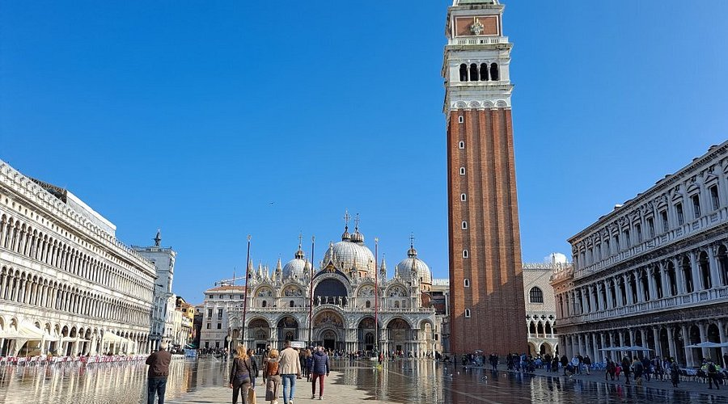

Italy – Piazza San Marco, Venice

Piazza San Marco, or St. Mark's Square, is the principal public square of Venice, Italy.
It is surrounded by beautiful architecture including St. Mark’s Basilica and
the Campanile, making it one of the most famous squares in the world.
Back to Home Page